Inferring the Gravitational Potential of the Milky Way
Casey Chu1,2, Yoram Lithwick1, Fabio Antonini1
1Northwestern University, 2Harvey Mudd College
How do we study something we can't see?
One way to study dark matter is to observe its effect on visible objects: stars. In particular, the distribution of dark matter in our galaxy generates a gravitational potential that affects the motion of the stars we observe.
The spacecraft Gaia is currently recording the position and velocity of one billion stars in the Milky Way (Perryman et al. 2001), so we are in perfect position to take advantage of this information about the gravitational potential that is statistically encoded in the motion of the stars.
We've created a simple, numerical algorithm to extract the gravitational potential from Gaia-like data. Given a set of observed positions and velocities of particles (stars), we are able to infer the potential in which they are traveling.
The fundamental assumption: phase-mixing
The algorithm we developed relies on the system being phase-mixed. Figure 1 depicts the phase-mixing of 200 particles that are initially close together in phase space, evolving in a potential of \Phi(x) = \frac{1}{2}|x|^\alpha for \alpha = 1.5.
The phase-mixing of 200 particles. The arrows trace the phase-space flow generated by the potential.
Notice that as time progresses, the particles approach a configuration that is macroscopically steady-state, or phase-mixed.
One important property of phase-mixing is that if we evolve the same set of particles under different potentials (e.g., different values of \alpha), then the particles evolve to different steady-state configurations.
Below: A star map generated from preliminary Gaia data. Source: ESA/Gaia (CC BY-SA 3.0 IGO).
The insight behind the inference algorithm
Let's assume that we know that the particles we observe are in a steady-state configuration. Then:
If we evolve the particles under the correct potential, they will remain in the same, steady-state configuration.
Conversely, if we evolve them under an incorrect potential, they will evolve towards a different configuration.
We demonstrate this in Figure 2, where a set of particles, drawn from an unknown potential, is evolved under three different trial potentials (different values of \alpha).
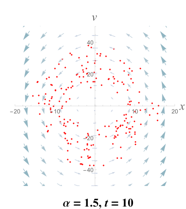
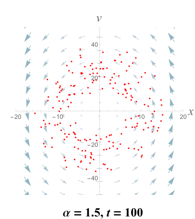
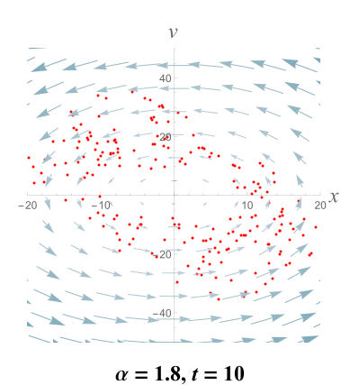
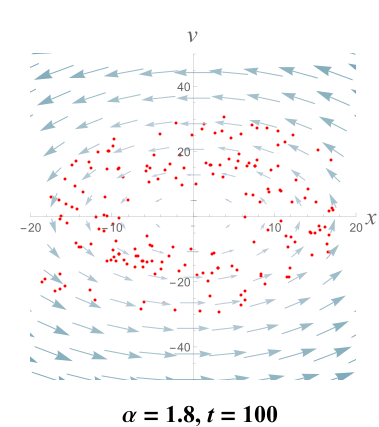
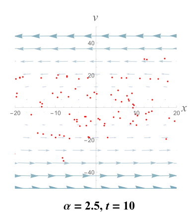
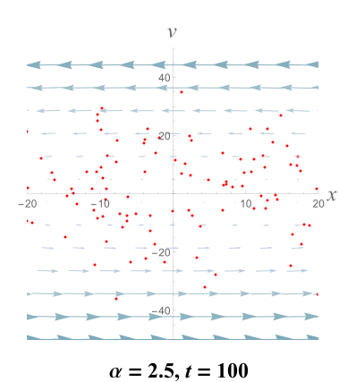
The evolution of observed particles under different potentials.
In this simple example, since the configuration of the particles evolved under the \alpha = 1.5 potential most resembles the original, observed distribution, we may infer that the particles most likely come from an \alpha = 1.5 potential.
The likelihood function
Instead of choosing the best potential by eye, we can construct a function L that quantifies how well a trial potential preserves the original configuration.
Let x_1, v_1, \ldots, x_n, v_n be a set of n observed positions and velocities. Then the likelihood that these observations came from a particular potential \Phi is
L(\Phi \,|\, x_1,v_1,\ldots,x_n,v_n) = \prod_i f(x_i, v_i \,|\, \Phi),
where we've defined
f(x,v \,|\, \Phi) = \frac{1}{nT}\int_0^T\sum_i K(x_i(t) - x)\,K(v_i(t) - v) \,dt,
where x_i(t) and v_i(t) denote the position and velocity of the ith particle evolved to time t under the potential \Phi, and K(\cdot) is a kernel function, e.g., a Gaussian centered at 0. This function L is greatest for potentials that preserve the original configuration.
This material is based upon work supported by the National Science Foundation under Grant No. AST-1359462, a Research Experiences for Undergraduates (REU) grant awarded to CIERA at Northwestern University. Any opinions, findings, and conclusions or recommendations expressed in this material are those of the authors and do not necessarily reflect the views of the National Science Foundation.
Summary of the algorithm
Our algorithm to infer the potential from a set of observed positions and velocities is as follows.
Guess a trial potential by choosing a set of values for the parameters of a potential, e.g., via a Monte Carlo method.
Calculate the likelihood of observing the data under the chosen potential, according to the formula in the previous section.
Repeat steps 1–2 until convergence of the likelihood. The most likely potential has the parameters with the greatest likelihood.
A two-dimensional test case
A contour plot of the likelihood of the parameters. Red is higher; contours are at 2^{-2^i} for i=0,\ldots,13.
We have tested the algorithm for the two-dimensional logarithmic potential given by
\Phi(x,y) = \log(x^2 + \frac{y^2}{q^2} + R_c^2),
where q and R_c are parameters that describe the shape of the potential. It is a simple model for real galaxies.
We simulated n = 10^4 particles in the logarithmic potential with true parameters of q^2=0.8 and R_c^2=1.5. Figure 3 depicts the likelihood we calculated. It peaks near the true values of the parameters, indicating that the algorithm was successful.
Advantages and future work
Our method has two novel advantages over existing methods (e.g., Bovy et al. 2010, Magorrian 2014, Han et al. 2015):
General: This algorithm requires only that the particles are in steady-state, whereas some other methods require also that the potential be integrable.
Intuitive: It has an intuitive interpretation in terms of phase-mixing.
Nevertheless, there are several challenges that should be addressed before applying the algorithm to Gaia data:
Computation time: An application to 10^9 particles will be computationally expensive.
Noise: The likelihood function is currently quite noisy, which may prevent accurate inference of parameters.
Lack of error bounds: It's currently unclear how to accurately quantify the uncertainty in the inferred parameters.
Contact information and further reading
For questions or comments, please contact Casey Chu at cchu@hmc.edu. Code written in C++ and a derivation of the likelihood function is available at bitsofpancake.github.io/potential-inference.
Binney & Tremaine, 2008, Galactic Dynamics: Second Edition.


 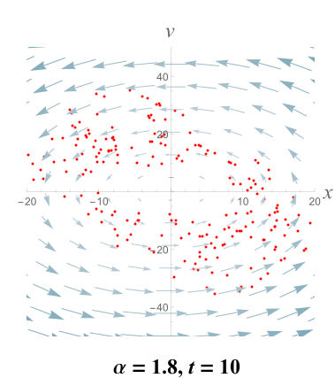
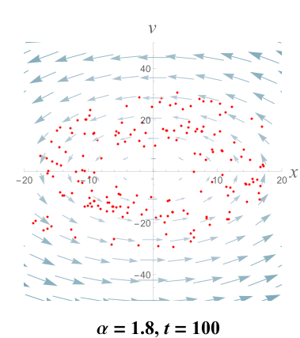
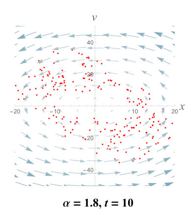
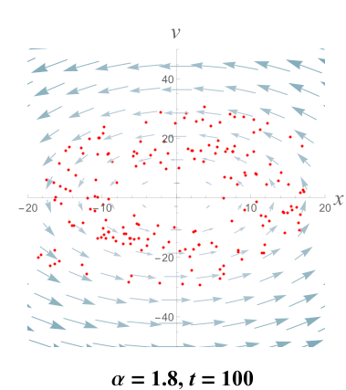
 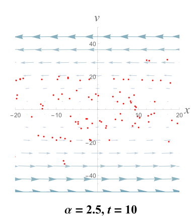
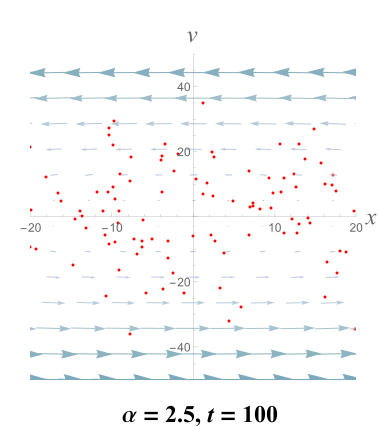
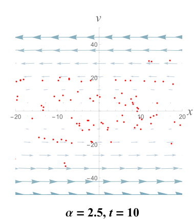
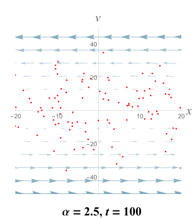